图示图鉴
灯泡（未知状态或普通灯泡）
灯泡（断路）
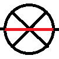
灯泡（短路）
灯泡（故障但具体故障未知）
灯泡（完好）
灯泡（亮/发光）
灯泡（暗/不发光）
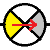
灯泡（由亮变暗）
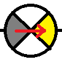
灯泡（由暗变亮）
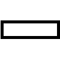
电阻（未知状态或普通导体）
电阻（完好）
电阻（故障但具体故障未知）
电阻（断路）
电阻（短路）
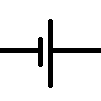
电源（干电池/学生电源/直流电）
 开关/电键（只是个普通的开关）
开关/电键（只是个普通的开关）
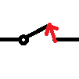
开关（由断开到闭合）
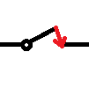
开关（由闭合到断开）
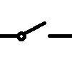
开关（断开）
开关（闭合）
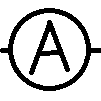
电流表（未知状态）
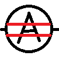
电流表（示数保持不变）
电流表（示数变大或有示数）
电流表（示数变小或无示数）
电压表（未知状态）
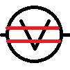
电压表（示数保持不变）
电压表（示数变大或有示数）
电压表（示数变小或无示数）
返回readme
(c)2020 Darth Jesus Yan